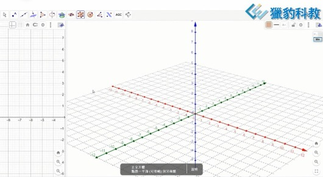

獵豹科教拔尖有道！數學高手的秘密武器就在這裡！
#本週六日直播講座報名請按讚留言+1
在升學考試中脫穎而出的關鍵，不只是天賦，而是學習過程善用工具的智慧！
● 唯一數學結合程式設計的利器——GeoGebra（GGB）！
學會GGB，不僅是會做題，更是會解題、會創新！
•複雜圖形？一目了然！ 自己動手操作，理解不再靠猜測。
•幾何疑難雜症？動手驗證！ 立體動態，學中解惑，讓學習直觀又高效！
•一題多解？輕鬆實現！ 培養你的創造力和靈活思維。
● 結合程式思維，拓展數學視野！
動態操作讓你看到數學背後的變化和邏輯，知識融會貫通，學習樂趣加倍！
● 打造數學高手的關鍵能力！
⊙ 圖像理解應用
⊙ 知識交叉連結
⊙ 動態直觀思考
⊙ 解題創造力與應用能力
★ 直播講座，讓你一探究竟！
數學高手的養成之路，從認識GGB開始！來聽聽獵豹老師分享如何利用GGB拔尖數學能力，讓孩子們的學習事半功倍！
♦ GGB1:適合三年級~五年級初學GGB學生/家長參加
授課老師：高微老師
『數學大趨勢~動態幾何和AI的結合』
12/22 (日) PM 2:30~3:30
幾何學一直是學生的痛點，那是因為沒有實際操作過動態幾何學。獵豹的學生有操作過動態幾何的經驗，在解幾何題上面都是如魚得水。
本次講座及後續課程融入了AI協助學生學習的部分讓孩子走在時代的尖端上。
歡迎參加！
---
♦ GGB3:適合五年級~七年級初學GGB學生/家長參加
授課老師：朱安強老師
『鍛鍊面積變換思維的好工具 GeoGebra』
12/21 (六) PM 4:00~5:00
三角形的面積計算看似簡單，只需“底乘以高再除以二”，但在實際考題中，往往難以一眼看出合適的底與高。這時，就需要我們對圖形進行一些變換，以便更準確地計算面積。
然而，幾何變換對於大多數人來說，卻是一個難以想象的領域。幸運的是，Geogebra這款軟件能夠幫助我們搭建起這座想象力的橋梁，讓我們的思維從靜態走向動態，從數字邁入變量的廣闊世界。
我們誠摯地邀請您於12月21日，一同來體驗Geogebra與Math帶來的數學盛宴。在這裡，您將深刻感受到數學的魅力與Geogebra的強大功能。
讓我們在獵豹GGB課程中，一起翱翔動態幾何的世界！★
---------------
選擇比努力更重要 #直播講座
「獵豹高手的秘密武器: 數學結合程式設計GGB1, GGB3 直播講座/輕體驗」
https://www.facebook.com/share/p/17y4FWqiAp/
詳見以下臉書連結（有影片）：
